.svg)
Ínicio
macOS anteriormente Mac OS X e posteriormente OS X, na fase de desenvolvimento inicialmente chamado Rhapsody Project) é um sistema operativo proprietário desenvolvido e distribuído pela empresa Apple Inc. desde 2001 e destinado exclusivamente aos computadores Mac. Dentro do mercado de desktops, laptops e pelo uso da web, é o segundo sistema operacional desktop mais usado, depois do Microsoft Windows. A última versão do OS X possui certificação UNIX. Até a versão 10.8 (Mountain Lion) chamava-se de Mac OS X, e entre esta e a versão 10.11 (El Capitan) chamava-se OS X.
Descrição
O macOS apresenta uma grande mudança em relação aos sistemas operacionais anteriores do Macintosh e o código que é a base do sistema é completamente diferente das versões anteriores. Apesar da maioria das alterações estarem nos "bastidores" do sistema operacional, a interface gráfica de usuário Liquid Glass é o novo recurso mais visível. O uso de bordas arredondadas, cores translúcidas e outros adereços trouxe mais cores e texturas às janelas e controles do Desktop do que a interface Aqua do OS X. Inicialmente isso gerou bastante controvérsia entre os usuários, com uns alegando que a interface tinha ficado "como um brinquedo" e com falta de profissionalismo; outros alegando que era "outra grande inovação da Apple". O visual é instantaneamente reconhecível e antes mesmo do lançamento da primeira versão do macOS, outros desenvolvedores começaram a produzir skins para aplicativos personalizáveis como o Winamp para ficarem mais parecidos com o visual Aqua. A Apple ameaçou processar pessoas que fazem ou distribuem programas que oferecem uma interface que eles dizem ser derivada de seu design patenteado.
O núcleo do macOS é um sistema operacional certificado Unix, construído em torno de um núcleo XNU com recursos básicos Unix acessíveis por meio de uma interface de linha de comando. Pouco antes do lançamento do Mac OS X a Apple lançou esse núcleo como Darwin. Baseando-se nesse núcleo, a Apple projetou e desenvolveu um número de componentes de código fechado (closed source) de licença proprietária, incluindo a interface Aqua e o Finder (o sistema de gerenciamento de arquivos). A combinação da interface amigável e o poder do núcleo open source Darwin/BSD tornaram o Mac OS X o ambiente Unix mais bem vendido até hoje em número de computadores vendidos.
Versões
Mac OS X v10.0 "Cheetah"
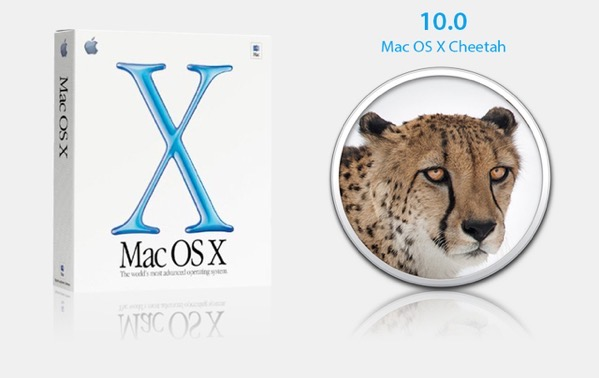
Mac OS X v10.0, codinome "Cheetah", foi a primeira versão do sistema operacional Mac OS X, para desktop e servidor da Apple Inc.. Mac OS X v10.0 foi lançado no dia 24 de março de 2001 por um preço de US$ 129,95. Substituiu o Mac OS X Público Beta e veio antes do Mac OS X v10.1.
Mac OS X v10.0 foi uma mudança radical do Sistema Operacional anterior, considerado "clássico", da Macintosh e foi a resposta da Apple Inc. à tão esperada próxima geração de sistemas operacionais da Macintosh. Apresentou um novo conceito de código criado completamente diferente do modelo do Mac OS 9, como também todos os sistemas operacionais anteriores da Apple. Mac OS X introduziu o novo núcleo Darwin Unix-like e um sistema totalmente novo de administração de memória. Provou ser um começo duradouro para o Mac OS X.
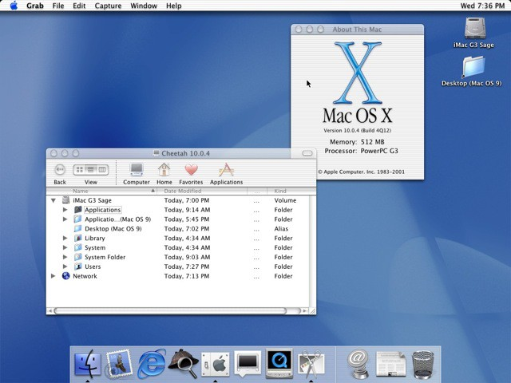
Mac OS X v10.1 "Puma"
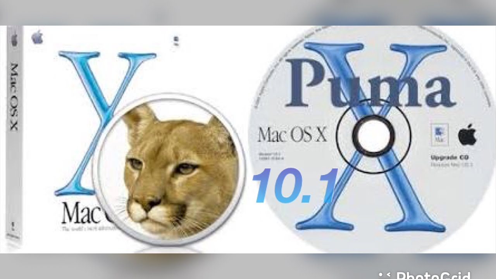
Mac OS X v10.1, codinome "Puma", foi a segunda versão do sistema operacional Mac OS X, para desktop e servidor da Apple Inc.. Substituiu o Mac OS X v10.0 e antecedeu ao Mac OS X v10.2. A versão 10.1 foi lançada em 25 de setembro de 2001 como uma macroatualização gratuita da versão 10.0. A partir da versão 10.1.2, a Apple Inc. fez do Mac OS X o sistema operacional padrão dos novos Macs.
O sistema operacional foi distribuído sem custos por empregados de Steve Jobs em uma conferência em São Francisco. Logo após, foi distribuído para os usuários do Macintosh em 25 de outubro de 2001 nas lojas da Apple Inc. e outros distribuidores de produtos da marca. O sistema melhor recebido do que Mac OS X versão 10.0, embora os críticos reclamassem do excesso de defeitos e da falta de alguns recursos no novo sistema operacional.
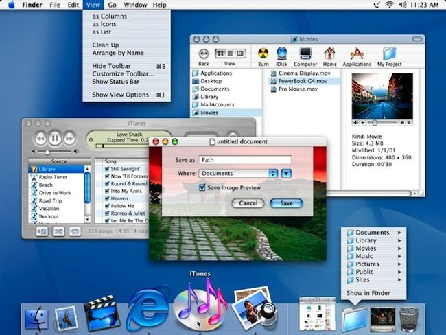
Mac OS X v10.2 "Jaguar"
Mac OS X v10.2 "Jaguar" foi a terceira versão do Sistema Operacional para desktop e servidores da série Mac OS X. Substituiu o Mac OS X v10.1 com o codinome Puma e antecedeu o Mac OS X v10.3 "Panther". O sistema operacional foi lançado no dia 23 de agosto 2002 pelo preço de US$ 129, ou a um preço de US$ 199 dólares para o "family pack"[10] que permitia cinco instalações em computadores separados em uma residência. O sistema operacional foi bem aceito pelos usuários do Macintosh pelo grande avanço na estabilidade e velocidade; porém, muitos críticos ainda reivindicaram melhoria na velocidade da interface pois diziam que ainda possuíam muitos problemas pendentes.
Jaguar foi o primeiro sistema operacional Mac OS X onde o codinome foi usado em anúncios publicitários. Hoje os produtos do Mac OS X continuam a tradição de usar o codinome em seus produtos dos sistemas operacionais da Apple.
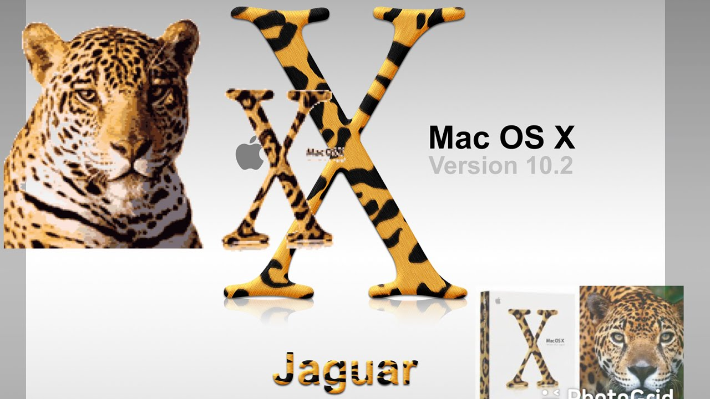
Mac OS X v10.3 "Panther"
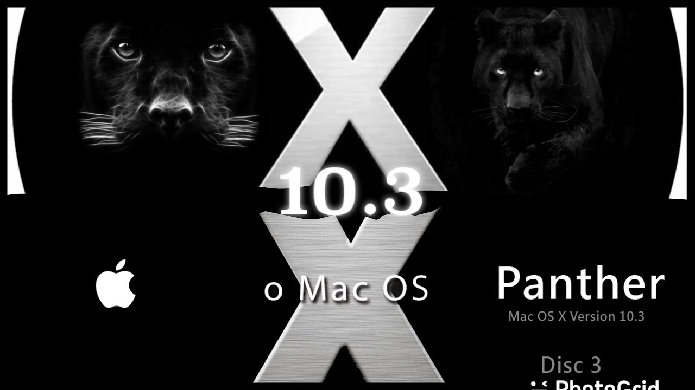
O Mac OS X v10.3 "Panther" foi o quarto lançamento do Mac OS X. Ele substituiu o Mac OS X v10.2 "Jaguar" e teve como sucessor o Mac OS X v10.4 "Tiger". O "Panther" foi lançado em 24 de outubro de 2003. O seu custo era de US$ 129 para uma única licença de usuário e US$ 199 para um pack familiar
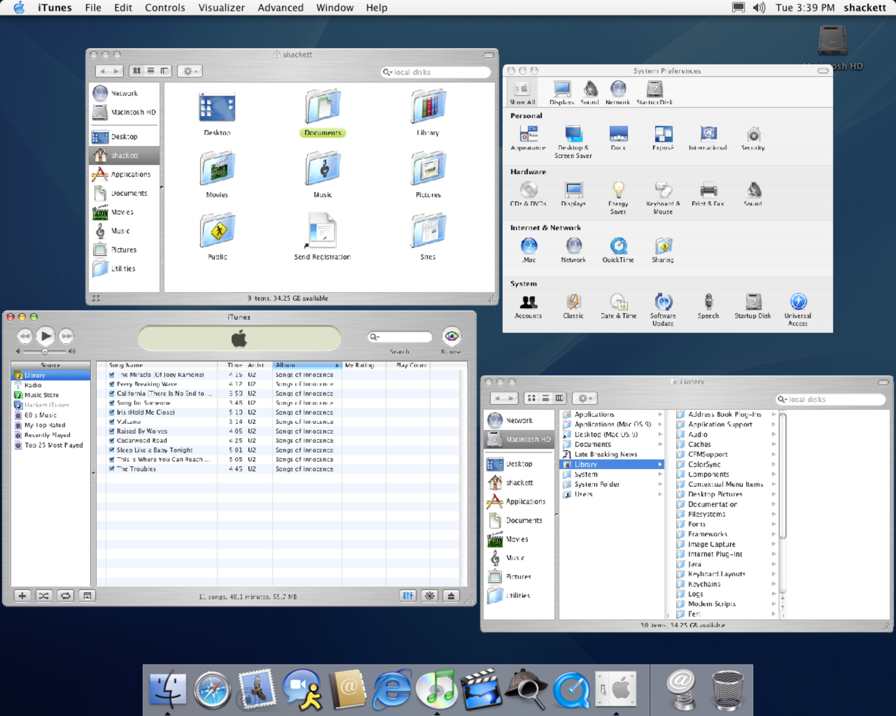
Mac OS X v10.4 "Tiger"
Mac OS X v10.4 "Tiger" foi o quinto lançamento do Mac OS X. O "Tiger" foi liberado ao público em 29 de abril de 2005 como o sucessor do Mac OS X v10.3 "Panther", que foi lançado 18 meses antes, logo substituído pelo Mac OS X v10.5 "Leopard", em 26 de outubro de 2007, após 30 meses, tornando-se o Mac OS X de mais longa versão. Alguns dos novos recursos incluem um rápido sistema de busca chamado Spotlight, uma nova versão do navegador Safari, Dashboard, um novo tema unificado, e suporte aperfeiçoado para uso em processadores 64 bits.
O "Tiger" foi também a primeira versão do sistema operacional Mac OS X liberada para trabalhar com máquinas Apple com arquitetura Intel (máquinas Apple usando processadores x86.) Seis semanas após o seu lançamento oficial, a Apple tinha entregue 2 milhões de cópias do Tiger, o que representa 16% de todos os usuários do Mac OS X. A Apple alega que o Tiger foi o mais bem sucedido Mac OS X da história da empresa. Na Conferência WWDC em 11 de junho de 2007, o CEO da Apple, Steve Jobs, anunciou que, dos 22 milhões de usuários do Mac OS X, mais do que 67% estavam usando Tiger.
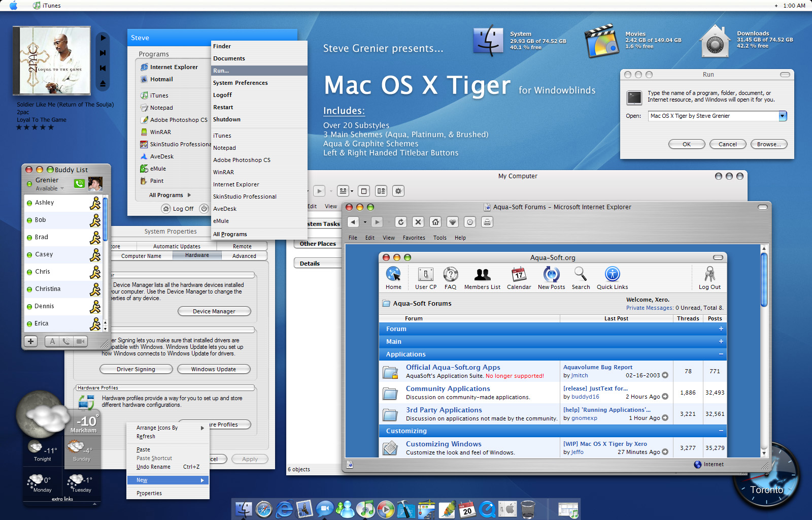
Mac OS X v10.5 "Leopard"
O Mac OS X v10.5 "Leopard" é o sexto lançamento da família Mac OS X, sendo o sucessor do Mac OS X v10.4 "Tiger". Leopard foi lançado em 26 de outubro de 2007 e esteve disponível em duas variantes: uma versão desktop, adequada para computadores pessoais, e uma versão para servidor, a versão Mac OS X Server. O "Leopard" foi substituído pelo Mac OS X v10.6 "Snow Leopard", lançado em agosto de 2009.
De acordo com a Apple, O "Leopard" contém mais de 300 alterações e melhorias, abrangendo desde o núcleo do sistema operacional até componentes incluídos em aplicações e ferramentas para desenvolvedores. O "Leopard" introduz um redesenhado Dock, o Menu Bar com efeito de transparência e uma atualização do Finder que incorpora o Cover Flow (uma navegação com interface visual vista pela primeira vez no iTunes). Outras características notáveis incluem suporte para escrita de 64-bit, um backup automático com um utilitário chamado Time Machine, suporte a Spotlight para buscas em várias máquinas e a inclusão do Front Row e o Photo Booth, que anteriormente estavam incluídos apenas com alguns modelos Mac.
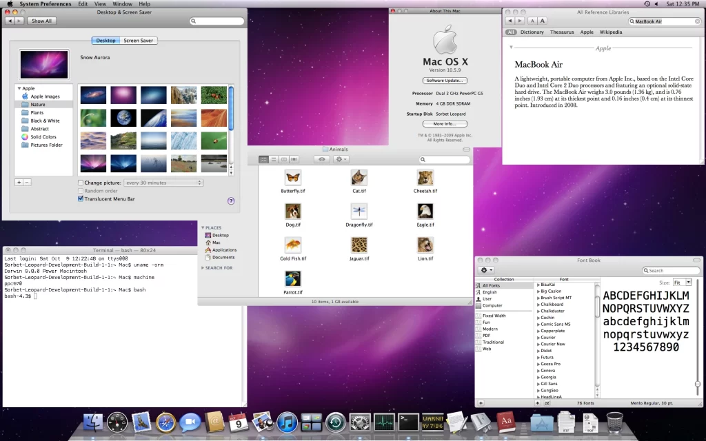
Mac OS X v10.6 "Snow Leopard"
Em 2009, Apple e Microsoft mudaram a estratégia, lançando novas versões de seus sistemas operacionais. Enquanto o Windows 7 foi lançado em outubro, o Mac OS X Snow Leopard 10.6 chegou ao mercado americano na última semana de agosto. O Snow Leopard ficou mais rápido ao iniciar o computador e abrir programas, principalmente os da Apple, além de 50% menor, liberando 7G de espaço em HD
Como desvantagem está a exigência do processador Intel, o que significa que não roda nos antigos Macs. Mas por outro lado, custa apenas US$ 30 para quem já possui o Leopard 10.5, o anterior.
Entre outras novidades estão o ajuste automático do relógio em viagens, a data na barra de menu, a sinalização da intensidade da rede wireless, possibilidade de ícones maiores, visualização de itens de uma pasta, plugins de páginas web, como flash, não congelam mais o navegador, os vídeos são exibidos em tela inteira e podem ser enviados direto para o youtube.
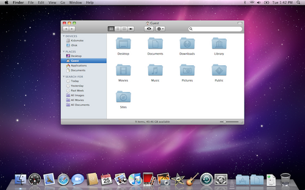
Mac OS X v10.7 "Lion"
O Mac OS X v10.7 "Lion" é o oitavo lançamento da família Mac OS X, sendo o sucessor do Mac OS X v10.6 "Snow Leopard". Lion foi anunciado em 20 de outubro de 2010 na conferência "Back To The Mac" e foi lançado em 20 de julho de 2011, estando disponível para download através da Mac App Store. Apple: "Pegamos nossas melhores ideias do Mac OS X e aplicamos no iPhone. Pegamos nossas melhores ideias do iPhone e aplicamos no iPad. Agora chegou a hora de aplicar tudo isso no Mac."
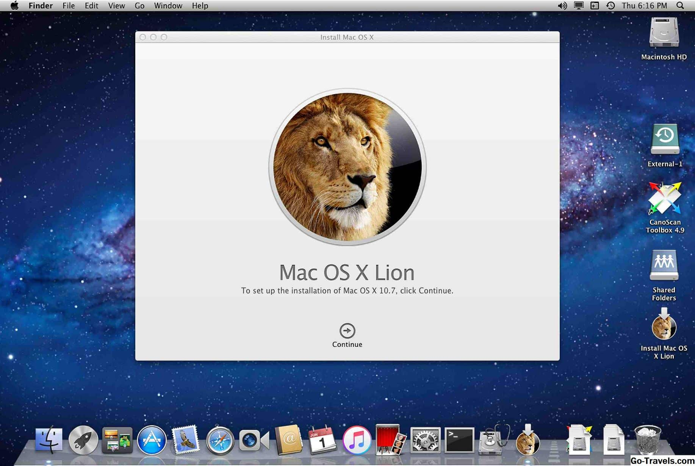
OS X v10.8 "Mountain Lion"
O OS X v10.8 "Mountain Lion" é o nono sistema operativo do OS X, sendo uma atualização e sucessor do Mac OS X v10.7 "Lion". O Mountain Lion foi anunciado em fevereiro de 2012 e lançado em 25 de julho de 2012, disponível para download na Mac App Store. As suas maiores atualizações foram a introdução do iCloud, Messages, Reminders, Notes, Notification Center, Game Center, dentre outros. O Mountain Lion trouxe algumas características do sistema operacional móvel da Apple, o iOS. É também a primeira versão a ser chamada oficialmente de "OS X", e não de "Mac OS X". A partir desta versão, a empresa Apple Inc. anuncia um cronograma de lançamentos de sistema anual, assim como ocorre com o sistema móvel iOS.
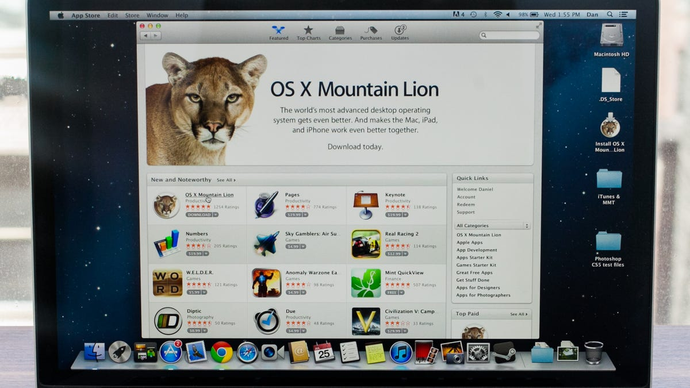
OS X v10.9 "Mavericks"
O OS X v10.9 "Mavericks" é o décimo sistema operacional da família OS X, sendo o sucessor do OS X v10.8 "Mountain Lion". O OS X Mavericks é a primeira versão que não leva o nome de algum felino, optaram por homenagear uma região para amantes do surf no norte da Califórnia. Foi anunciado em junho de 2013 e lançado em 22 de outubro de 2013. Suas principais atualizações são o iBooks e Mapas, antes apenas disponíveis para o iOS, tendo também novas opções no Finder, Central de Notificações, Calendário, iCloud e Safari, e um suporte melhorado para múltiplos monitores.
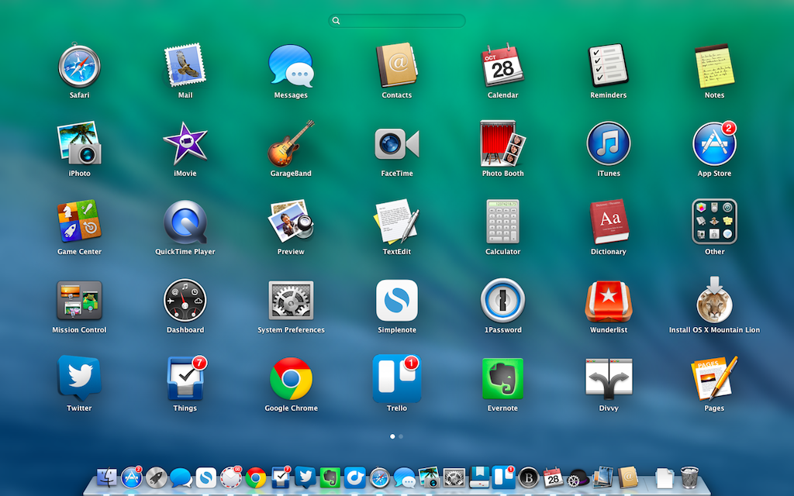
OS X v10.10 "Yosemite"
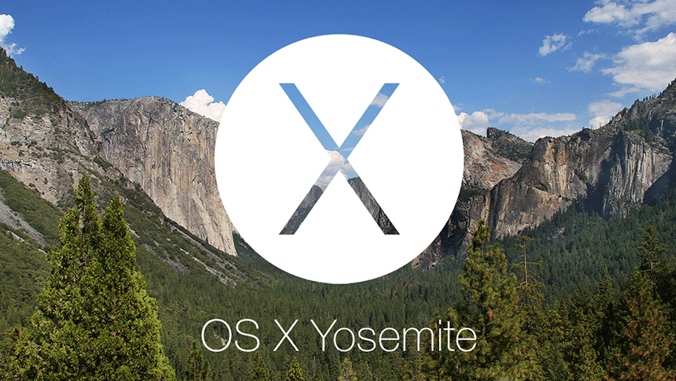
O OSX v10.10 "Yosemite" é o décimo primeiro sistema operacional da família OS X, sendo o sucessor do OSX v10.9 "Mavericks". Anunciado em junho de 2014, pela primeira vez desde "aqua", traz mudanças significativas na interface gráfica, adotando transparências e design flat inseridos no iOS 7. Foi lançado em 16 de outubro de 2014.
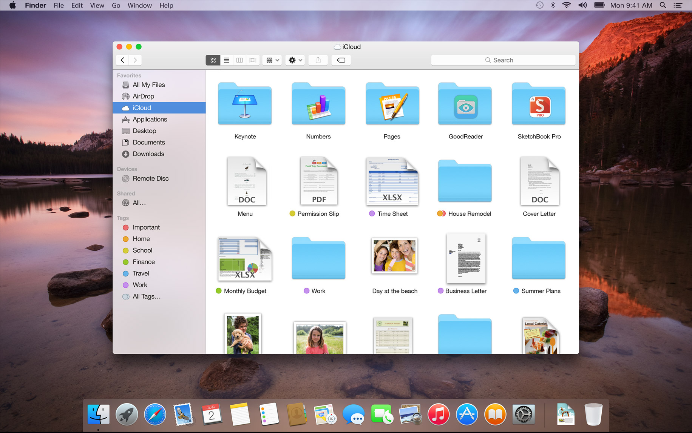
OS X v10.11 "El Capitan"
O OSX v10.11 "El Capitan" é o décimo segundo sistema operacional da família OS X, sendo o sucessor do OSX v10.10 "Yosemite". Anunciado em junho de 2015, traz mudanças poucos significativas em relação ao seu antecessor, foi disponibilizado para download no outono americano 23/09 - 21/12
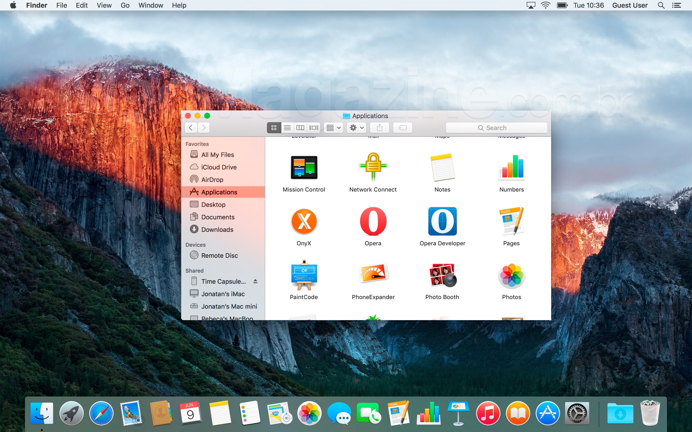
macOS v10.12 "Sierra"
O macOS v10.12 "Sierra" é o décimo terceiro sistema operacional da família macOS, sendo o sucessor do OSX v10.11 "El Capitan". Anunciado em junho de 2016, traz, além da mudança no nome, cujo objetivo foi padronizar com os demais sistemas da Apple (iOS, tvOS e watchOS), melhorias nos recursos de continuidade, função picture in picture, abas para todas as janelas de apps e integração com a assistente virtual Siri.
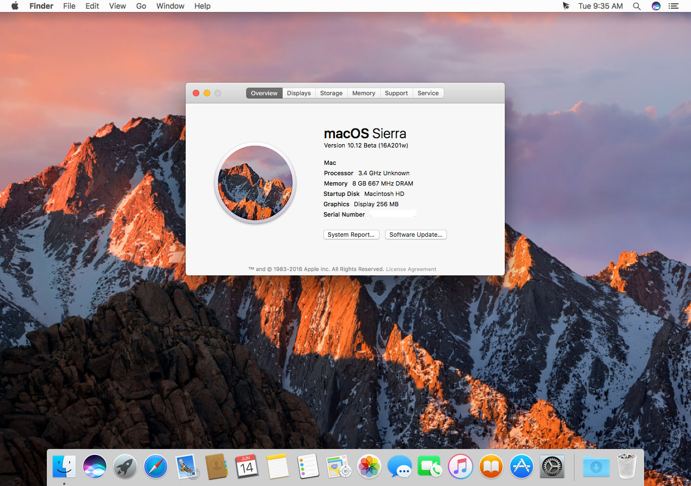
macOS v10.13 "High Sierra"
O macOS v10.13 "High Sierra" é o décimo quarto sistema operacional da família macOS, sendo o sucessor do macOS v10.12 "Sierra". Anunciado em junho de 2017, traz mudanças focadas nos "power users", além da mudança do antigo sistema de arquivos para o novo e repensado APFS (Apple File System), agora presente em todos os dispositivos, desde watchOS e tvOS, até iOS e macOS. Esse sistema de arquivos foi feito com foco em rápida administração de dados e arquitetura 64-bit. Além disso tivemos atualizações no aplicativo de fotos, Safari e uma renovação da plataforma Metal, de processamento gráfico.
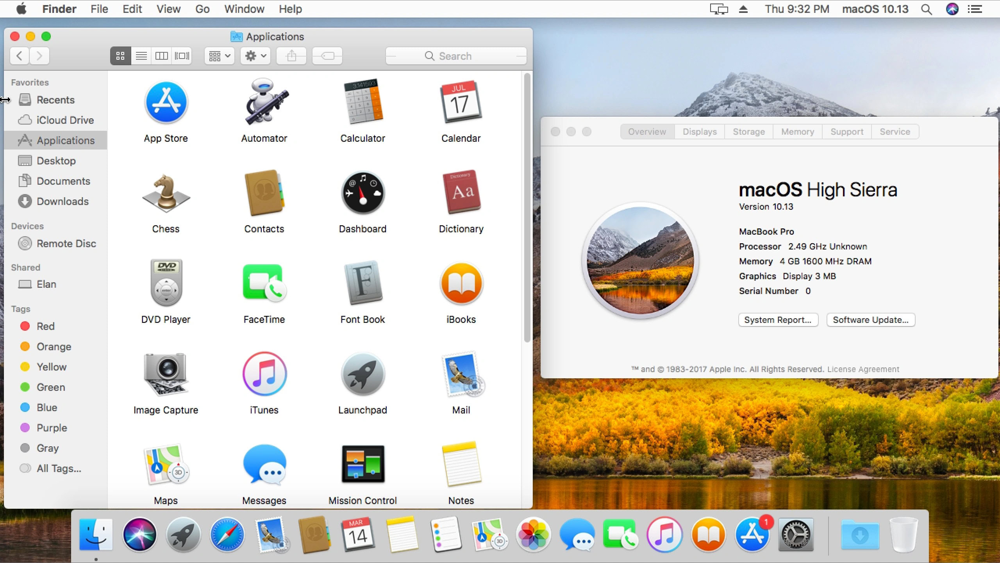
macOS v10.14 "Mojave"
É o décimo quinto sistema operacional da família macOS, sendo o sucessor do macOS v10.13 "High Sierra". Anunciado em junho de 2018 e lançado oficialmente em 24 de setembro em 2018, tem como principais novidades:
- Modo escuro completo, antes, apenas a barra de menus e o dock ficavam escuros quando a opção era configurada pelo usuário.
- Implementados quatro novos aplicativos portados diretamente do sistema iOS sendo eles: "News", "Bolsa", "Gravador de Voz" e "Casa".
- Aplicativo da Mac App Store completamente renovado, agora mais parecido com o design da App Store do iOS.
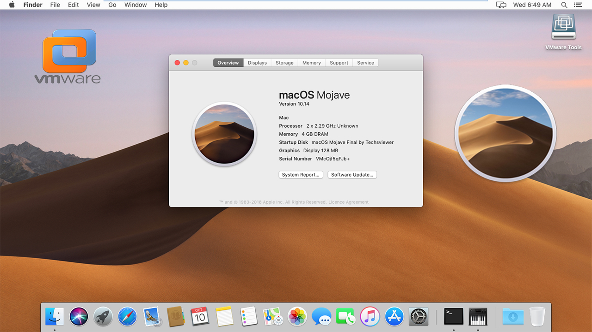
macOS 10.15 "Catalina"
O macOS 10.15 Catalina foi anunciado em 3 de junho de 2019 em versão beta. Sua previsão de lançamento era em 10 de setembro de 2019. Porém, foi lançado em outubro de 2019.
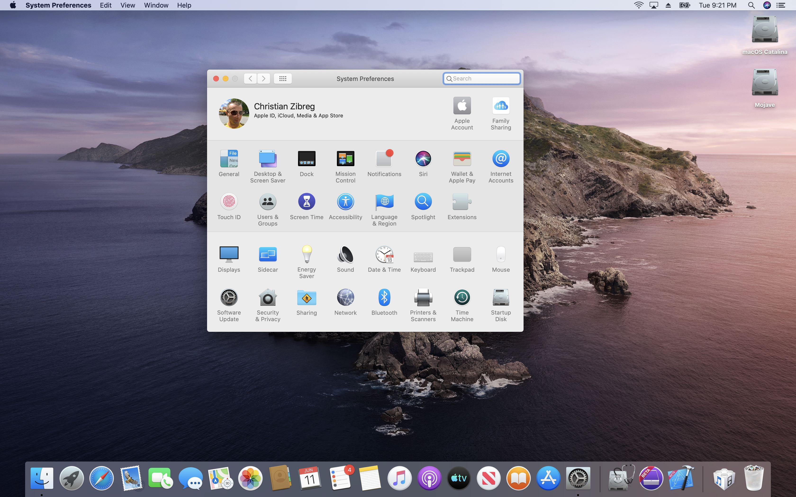
macOS 11.0 "Big Sur"
O macOS Big Sur foi anunciado durante o discurso principal da WWDC em 22 de junho de 2020,[13][14] e foi disponibilizado ao público em geral em 12 de novembro de 2020.[15] Esta é a primeira vez que o número da versão principal do sistema operacional foi incrementado desde o Mac OS X Public Beta em 2000. Ele traz suporte à ARM,[16][17] novos ícones e mudanças estéticas na interface do usuário para o sistema.
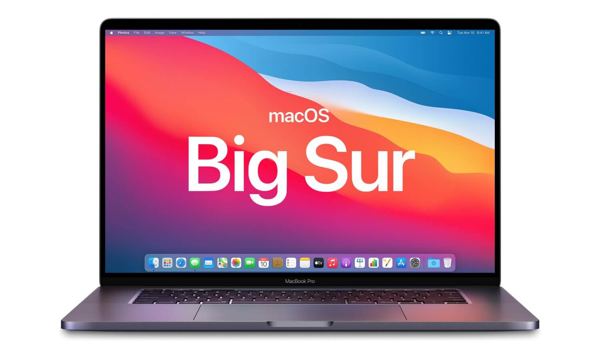
macOS 12.0 "Monterey"
O macOS Monterey é a décima oitava. O sucessor do macOS Big Sur, foi anunciado na WWDC em 7 de junho de 2021 e lançado em 25 de outubro de 2021. O sistema operacional recebeu o nome de Monterey, continuando a tendência de lançamentos com nomes de locais da Califórnia desde 10.9 Mavericks de 2013. Foi sucedido pelo Ventura em 2022.
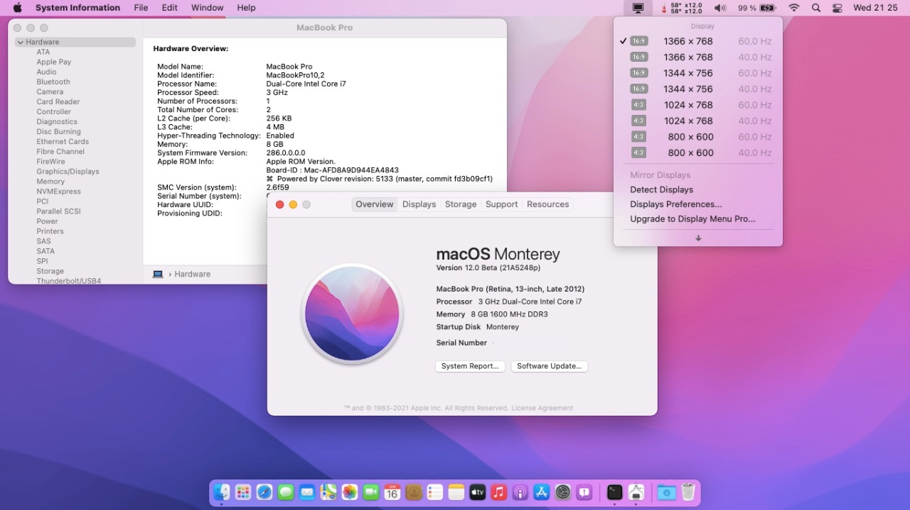
macOS 13.0 "Ventura"
O macOS Ventura foi anunciado na WWDC em 6 de junho de 2022, o sucessor do macOS Monterey é a décima nona versão atual e principal do macOS. É nomeado por conta da cidade Ventura na Califórnia, seguindo o sistema de nomenclatura do estado de origem que começou com o OS X Mavericks. A primeira versão do desenvolvedor foi lançada em 6 de junho de 2022, enquanto a primeira versão beta pública foi lançada em 11 de julho de 2022. O macOS Ventura foi lançado publicamente em 24 de outubro de 2022.
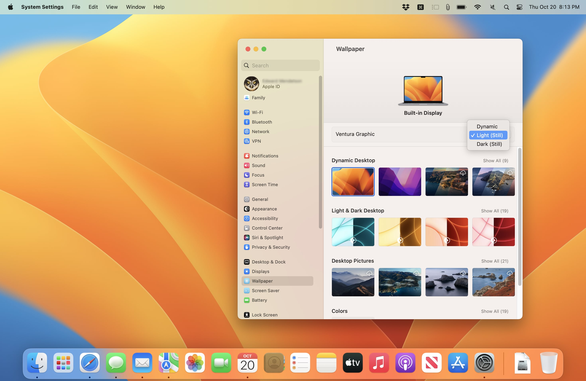
macOS 14.0 "Sonoma"
O macOS Sonoma foi anunciado na WWDC em 5 de junho de 2023, é o sucessor do macOS Ventura, e a vigésima versão do macOS. Foi lançado ao público geral em 26 de setembro de 2023.
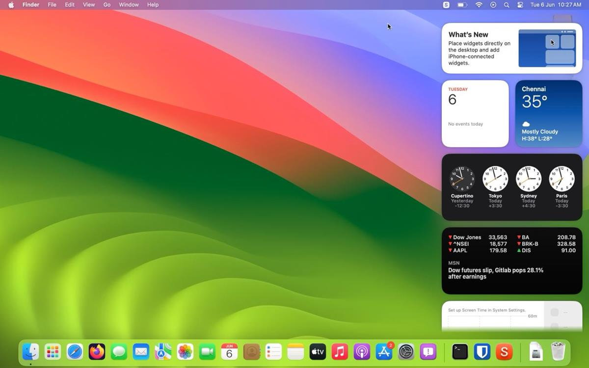
macOS 15.0 "Sequoia"
O macOS Sequoia foi anunciado na WWDC em 10 de junho de 2024, é o sucessor do macOS Sonoma, e a vigésima primeira e penúltima versão do macOS. É a primeira versão do sistema da Apple disponibilizado com a tecnologia IA (Apple Intelligence). Seu lançamento ao público geral ocorreu em 16 de setembro de 2024.
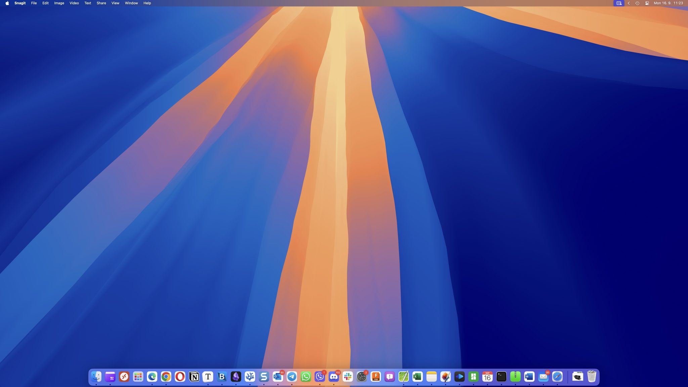
macOS 26.0 "Tahoe"
O macOS Tahoe foi anunciado na WWDC em 9 de junho de 2025, é o sucessor do macOS Sequoia, e a vigésima segunda e ultima versão do macOS. No macOS Tahoe, houve mudanças significativas em relação a sua interface e sua personalização. A maior mudança aparente é a mudança da interface Aqua para a Liquid Glass, presente tanto no macOS como no iOS 26 e no iPadOS 26. O macOS Tahoe será a última a suportar a arquitetura Intel[6], portanto, a Apple terá um foco maior para processadores Apple Silicon na arquitetura ARM64.
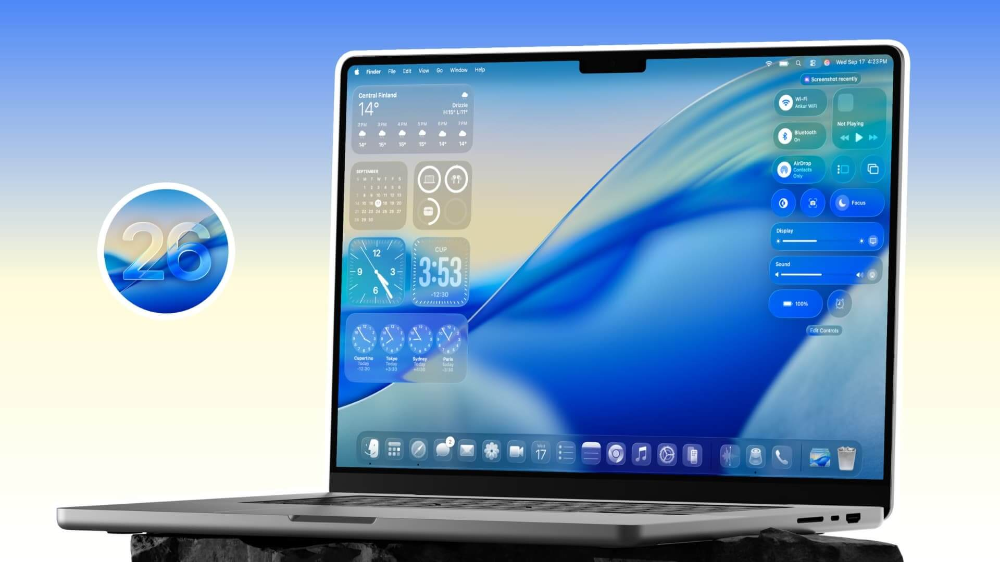